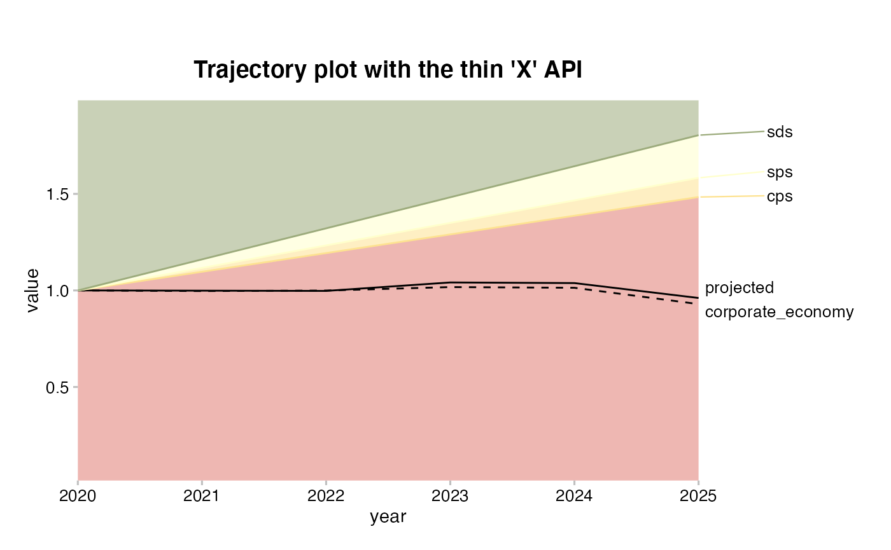
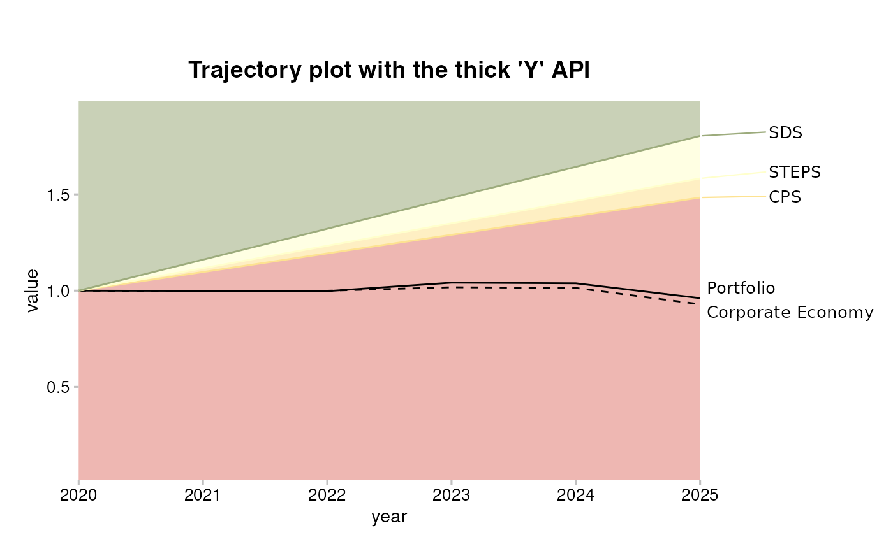

vignettes/articles/r2dii-plot-X-versus-Y.Rmd
r2dii-plot-X-versus-Y.RmdThe goal of r2dii.plot is to help you plot 2DII data in an informative, beautiful, and easy way.
You can install the development version of r2dii.plot from GitHub with:
# install.packages("devtools")
devtools::install_github("2DegreesInvesting/r2dii.plot")The r2dii.plot package is designed to work smoothly with other “r2dii” packages – r2dii.data, r2dii.match, and r2dii.analysis. It also plays well with the popular packages dplyr and ggplot2, which help you prepare your data and customize your plots.
Your data typically comes from the output of two functions in the r2dii.analysis package: target_sda() and target_market_share(). Here you’ll use two example datasets that come with r2dii.plot.
sda
#> # A tibble: 208 x 4
#> sector year emission_factor_metric emission_factor_value
#> <chr> <dbl> <chr> <dbl>
#> 1 automotive 2002 projected 0.228
#> 2 automotive 2003 projected 0.226
#> 3 automotive 2004 projected 0.224
#> 4 automotive 2005 projected 0.222
#> 5 automotive 2006 projected 0.220
#> 6 automotive 2007 projected 0.218
#> 7 automotive 2008 projected 0.216
#> 8 automotive 2009 projected 0.214
#> 9 automotive 2010 projected 0.212
#> 10 automotive 2011 projected 0.210
#> # … with 198 more rows
market_share
#> # A tibble: 1,170 x 8
#> sector technology year region scenario_source metric production
#> <chr> <chr> <int> <chr> <chr> <chr> <dbl>
#> 1 automotive electric 2020 global demo_2020 projected 145942.
#> 2 automotive electric 2020 global demo_2020 corporate_econ… 8134869.
#> 3 automotive electric 2020 global demo_2020 target_cps 145942.
#> 4 automotive electric 2020 global demo_2020 target_sds 145942.
#> 5 automotive electric 2020 global demo_2020 target_sps 145942.
#> 6 automotive electric 2021 global demo_2020 projected 148212.
#> 7 automotive electric 2021 global demo_2020 corporate_econ… 8183411.
#> 8 automotive electric 2021 global demo_2020 target_cps 148361.
#> 9 automotive electric 2021 global demo_2020 target_sds 160625.
#> 10 automotive electric 2021 global demo_2020 target_sps 149016.
#> # … with 1,160 more rows, and 1 more variable: technology_share <dbl>r2dii.plot supports three kinds of plots – timeline, techmix, and trajectory. Each plot has specific requirements for the first argument data. To meet those requirements we currently provide two experimental sets of functions (APIs) – X and Y.
Both APIs can help you get the same plots. The difference is not in what you can do but in how you can do it:
The X API has a simpler interface. It focuses exclusively on the tasks you can’t easily achieve with other packages, and assumes you can meet the data requirements and customize your plots with other packages such as base R, dplyr, and ggplot2. It forces you to learn or reuse your existing knowledge of other R packages and workflows.
The Y API has a more complex but complete toolkit. It offers more functions and arguments that wrap features from other packages to help you meet the data requirements and customize your plots directly with r2dii.plot. and ggplot2. It forces you to learn the new r2dii.plot way of doing things but requires little knowledge of other packages and workflows.
These tables summarize the differences for users and developers of r2dii.plot:
| X API | Y API | |
|---|---|---|
| Interface | Simpler | More complex |
Meet data requirements |
With other packages | With r2dii.plot and optionally other packages |
| Customize plots | With other packages | With r2dii.plot and optionally other packages |
| Integrates with other R packages and workflows | More | Less |
| X API | Y API | |
|---|---|---|
| Easy to maintain | Less | More |
| Easy to extend | More | Less |
To make the comparison concrete consider this small example of a trajectory plot (the other plot types you can find in the detailed X API and Y API) articles. Notice the resulting plot is almost the same (except for the labels) but the toolkit is different.
data <- market_share
prep <- filter(
data,
sector == "power",
technology == "renewablescap",
region == "global",
scenario_source == "demo_2020",
year <= 2025
)
plot_trajectoryX(prep) +
labs (title = "Trajectory plot with the thin 'X' API")
data <- market_share
prep <- prep_trajectoryY(
data,
sector_filter = "power",
technology_filter = "renewablescap",
region_filter = "global",
scenario_source_filter = "demo_2020",
value = "production"
)
scenario_specs <- dplyr::tibble(
scenario = c("sds", "sps", "cps"),
label = c("SDS", "STEPS", "CPS")
)
main_line_metric <- dplyr::tibble(metric = "projected", label = "Portfolio")
additional_line_metrics <- dplyr::tibble(
metric = "corporate_economy",
label = "Corporate Economy"
)
plot_trajectoryY(
prep,
scenario_specs_good_to_bad = scenario_specs,
main_line_metric = main_line_metric,
additional_line_metrics = additional_line_metrics
) +
labs (title = "Trajectory plot with the thick 'Y' API")
For full examples see the dedicated articles r2dii.plot X and r2dii.plot Y.